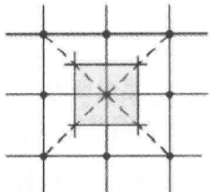

超材料通常由具有亚波长单元的周期性结构组成，因此超材料具有一定的对称性，群论可以用于研究超材料的对称性.
群论是一种用于精准刻画对称性的数学分支.
从对称性的角度来看，任何光子晶体都是周期性结构，即具有离散平移对称性.
光子晶体通常区别于常规晶体，是一种人工晶体.
当以固定步长的整数倍进行平移时晶体具有结构不变性.
光子晶体中的周期性为离散平移对称性.
离散平移对称性是周期性的一种表现.
对称性还包括介质单元的几何对称性、材料的对称性（如各向异性材料）、晶胞的几何对称性等.
1850年，Bravais提出了空间点阵理论，用于表征晶体结构.
将晶体中每一个原子或原子团，用处于该位置处的几何点替代，得到的与晶体几何性质有关的点的集合.
晶格是没有几何体积的，是一个纯粹的数学概念上的集合.
晶格描述的是一个无限大的晶体.
晶格中每个点都与晶体中的一个原子或原子团对应，这些点称为格点.
格点仅考虑几何位置（包括自己的位置和与其他格点的相对位置关系），不考虑所处位置的原子或原子团种类.
考虑一个周期内的相对位置即可.
由于晶格中所有格点都是相同的，因此三维晶格包含14种，分属7个晶系；二维晶格包括5种，分属4个晶系.
晶格＞周期＞格点
所谓的晶格中所有格点相同，描述的是这样一件事：
每个格点内的包含的是几何信息，一旦知道一个格点的信息，就知道了晶体内的平移规则，而这个平移规则对于所有格点都是适用的.
14种与5种，指的就是平移规则的种类.
二维晶格的典型例子为石墨烯，在某个方向上其厚度为单层原子.
类比于二维晶体中原子排列的周期性，对周期的光子晶体结构也能用空间点阵理论加以描述.
在点阵中任选一点为坐标原点，平面光子晶体周期结构可以通过将原点平移至任意点阵位置获得.
选择不同的原点位置，最终得到的点阵都是相同的.
点阵平移的矢量\(\boldsymbol{R}\)可以通过两个基矢量\(\boldsymbol{a}_1\)与\(\boldsymbol{a}_2\)的组合表示：
$$\boldsymbol{R} = m_1\boldsymbol{a}_1 + m_2\boldsymbol{a}_2,\quad m_1,m_2\in \mathbb{Z}$$由\(\boldsymbol{a}_1\)与\(\boldsymbol{a}_2\)构成的图形称为初基晶胞或原胞，其包含了周期结构中的最小重复单元.
周期结构中，任一点的位置矢量\(\boldsymbol{r}'\)可以写为：
$$\boldsymbol{r}' = \boldsymbol{r} + m_1\boldsymbol{a}_1 + m_2\boldsymbol{a}_2 = \boldsymbol{r} + \boldsymbol{R}$$由于初基平移矢量的选择不是唯一的，因此初基晶胞也不是唯一的，只要其为晶体的最小重复单元即可.
但无论如何选择，初基晶胞都具有相同的面积，每个初基晶胞仅包含一个格点.
一种最常见的初基晶胞，其与初基平移矢量的选择无关.
具体构造过程如下：
首先选择一个格点作为原点，然后绘制直线以连接原点及其最近的格点，接下来从这些直线的中点开始绘制新的垂直直线，由相交的垂直线包围的区域称为Wigenr-Seitz晶胞.

根据晶体的周期性，可以将晶体结构变换至傅里叶域.
对于一个描述晶格的周期函数\(f\)，其傅里叶分解可以表示为：
$$f(\boldsymbol{r}) = \sum_{\boldsymbol{G}}f(\boldsymbol{G})e^{i\boldsymbol{G}\cdot\boldsymbol{r}}$$因此，傅里叶分解就是一种平面波的展开形式.
根据晶体的周期性，上式必须满足：
$$f(\boldsymbol{r} + \boldsymbol{R}) = \sum_{\boldsymbol{G}}f(\boldsymbol{G})e^{i\boldsymbol{G}\cdot\boldsymbol{r}}e^{i\boldsymbol{G}\cdot\boldsymbol{R}} = f(\boldsymbol{r})$$为了满足上述等式，有：
$$e^{i\boldsymbol{G}\cdot\boldsymbol{R}} = 1$$即：
$$\boldsymbol{G}\cdot\boldsymbol{R} = 2m\pi,\quad m\in\mathbb{Z}$$根据初基平移矢量\(\boldsymbol{a}_1, \boldsymbol{a}_2\)，可以定义矢量\(\boldsymbol{b}_1,\boldsymbol{b}_2\)：
$$$$